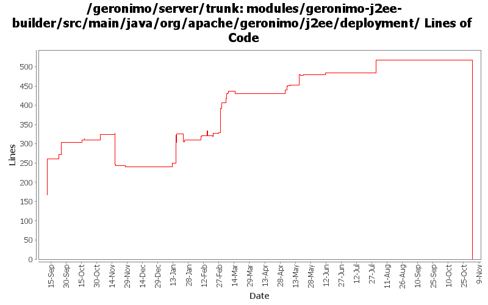

[root]/modules/geronimo-j2ee-builder/src/main/java/org/apache/geronimo/j2ee/deployment
 annotation
(0 files, 0 lines)
annotation
(0 files, 0 lines)

| Author | Changes | Lines of Code | Lines per Change |
|---|---|---|---|
| Totals | 174 (100.0%) | 1426 (100.0%) | 8.1 |
| djencks | 81 (46.6%) | 881 (61.8%) | 10.8 |
| sppatel | 8 (4.6%) | 404 (28.3%) | 50.5 |
| jlaskowski | 24 (13.8%) | 87 (6.1%) | 3.6 |
| gdamour | 3 (1.7%) | 21 (1.5%) | 7.0 |
| akulshreshtha | 1 (0.6%) | 18 (1.3%) | 18.0 |
| dain | 2 (1.1%) | 7 (0.5%) | 3.5 |
| jgenender | 2 (1.1%) | 2 (0.1%) | 1.0 |
| gawor | 2 (1.1%) | 2 (0.1%) | 1.0 |
| dblevins | 1 (0.6%) | 2 (0.1%) | 2.0 |
| rickmcguire | 1 (0.6%) | 1 (0.1%) | 1.0 |
| dwoods | 1 (0.6%) | 1 (0.1%) | 1.0 |
| prasad | 27 (15.5%) | 0 (0.0%) | 0.0 |
| kevan | 21 (12.1%) | 0 (0.0%) | 0.0 |
GERONIMO-3565. Modules distributed amongst framework/modules and plugins
0 lines of code changed in 27 files:
GERONIMO-3416, start on moving common bits of deployment test infrastructure into kernel test jar. Might also fix GERONMO-3415
8 lines of code changed in 1 file:
GERONIMO-2286 GERONIMO-1874 GERONIMO-3140 Use patterns for external-rar in app client plans and external-path in ear plan external modules. Allow partial artifacts and use an ArtifactResolver to fill in the missing bits. Use client_artifact_aliases.properties in the app client builder to help avoid using server side modules when client side modules are intended for runtime. This is not backward compatible for apps using external-rar or external-path.
56 lines of code changed in 1 file:
GERONIMO-3246 Cleanup exception handling so stack traces for first failures are not discarded.
1 lines of code changed in 1 file:
GERONIMO-3144, GERONIMO-3236 Make standalone app clients deploy (and even work)
4 lines of code changed in 1 file:
GERONIMO-3177 GERONIMO-3122 make exclude-unlisted-classes work. Also make jpa work in standalone ejb jars and wars
3 lines of code changed in 1 file:
expose Module instead of the just the module jar file
2 lines of code changed in 2 files:
GERONIMO-3132 GERONIMO-3165. Fix a bunch of stuff with locating persistence.xml and persistence unit jars. Hook up with openejb for extended persistence contexts
37 lines of code changed in 3 files:
GERONIMO-3151 DeploymentUtil.recursiveDelete(File,Collection) is returning a collection of File objects, whereas most builders are expecting Strings
1 lines of code changed in 1 file:
GERONIMO-3134 App client module needs to return client environment from getEnvironment. Server environment is a problem, see GERONIMO-3144
7 lines of code changed in 1 file:
Fix compilation error. Also, refactor and reformat a little bit the code for better readability.
2 lines of code changed in 1 file:
GERONIMO-3134 share message destinations with appclient
6 lines of code changed in 1 file:
GERONIMO-3134 GERONIMO-3136 Fix app client refs including ejb refs. Get a lot closer to jpa working on the app client
23 lines of code changed in 3 files:
GERONIMO-3131 GERONIMO-3132 GERONIMO-3133 GERONIMO-3134 Defaults for persistence units. Supply locations of jars with persistent classes to the PersistenceUnitInfo. Match a ref with not persistence unit specified to a unique match. Allow wars to have jndi references pointing to the war module, not just the ear
18 lines of code changed in 1 file:
fix typo
2 lines of code changed in 1 file:
GERONIMO-2958 MyFaces annotation support. Also clean up Module construction and remove unused method from ModuleBuilderExtension
10 lines of code changed in 6 files:
GERONIMO-2940, GERONIMO-2887 More injection work for app client and jetty: lifecycle methods verified on app client. Ear lib dir available to app client. Also upgrade to jetty snapshot for jetty lifecycle method support
16 lines of code changed in 3 files:
GERONMO-2887 More work to on injections and lifecycle methods
5 lines of code changed in 1 file:
It is only when the module is an EAR, that persistenceUnitBuilders should
be invoked. The previous code was causing a NPE when standalone modules
were built.
4 lines of code changed in 1 file:
Process persistence units located in the EAR library folder.
This fixes GERONIMO-2928 - PersistenceUnit located in the EAR library directory is not yet implemented
15 lines of code changed in 1 file:
GERONIMO-2934 Create ClassFinder in module builders. This almost certainly has bugs
12 lines of code changed in 1 file:
GERONIMO-2893 Progress towards better annotation support
24 lines of code changed in 5 files:
GERONIMO-2908 - Deploy JAX-WS services without webservices.xml
2 lines of code changed in 2 files:
GERONIMO-2827 some ee5 app client support: no dd required and some injection support. Also better support for no dd in ears, and help ejb module builder not object if its given a non-ejb module. Also refactor some naming builder stuff
71 lines of code changed in 3 files:
if no dd and manifest contains main-class then consider it an appclient
4 lines of code changed in 1 file:
GERONIMO-2887 Start hooking up injection for jetty
1 lines of code changed in 1 file:
GERONIMO-2837 annotation processing first step
11 lines of code changed in 1 file:
GERONIMO-2816 related. Move the NamingBuilder.buildEnvironment late enough so a classloader is available for help with annotation procesing. Intermediate patch to coordinate work.
134 lines of code changed in 6 files:
GERONIMO-2485 Work on PersistenceUnitBuilder. jpa test app now deploys but can not access most persistence features
0 lines of code changed in 1 file:
GERONIMO-2485 Make persistence unit gbean abstract names more unique. NOT FINISHED, but in its current state gives different names to autogenerated cmp persistence units in different ejb modules
12 lines of code changed in 1 file:
Ported Axis1 integration
2 lines of code changed in 1 file:
fix checking of jar entry as a "lib" entry and get the actual value of lib directory
21 lines of code changed in 1 file:
Deployments without an ejb-jar.xml file now work
2 lines of code changed in 1 file:
Fixed ejb-ref and ejb-local-ref to business interfaces
5 lines of code changed in 1 file:
GERONIMO-2769 Look at geronimo plan even if application.xml is missing
217 lines of code changed in 1 file:
fix specified group/artifact/version elements being ignored on standalone module deployments
4 lines of code changed in 1 file:
fix NPE.. continue search if no applclient or ejbjar
2 lines of code changed in 1 file:
need to filter out .jar files to add to ear classloader
1 lines of code changed in 1 file:
add support for library-directory in application.xm - add alls jars in lib entry to classloader of ear
18 lines of code changed in 1 file:
refactor addModules to improve readability
157 lines of code changed in 1 file:
(17 more)